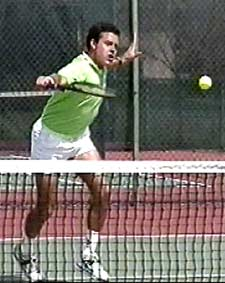
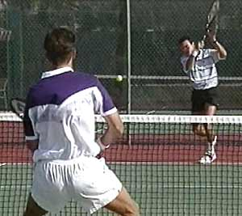
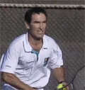

Previous: Winners And Errors | 🏠 Strategy Home | Next: Winning Matches - Tactics
Winning matches game plan
Comprehensive unified tennis knowledge base — Fundamentals, Stroke Analysis, Reference Library, and more
Winning Matches: Game plan
By Allen Fox, Ph.D.
Click to hear Allen Fox on breaking your opponent's will to fight
If we look at pro tennis it's obvious that the successful players win matches for one reason: they know how to win points. That sounds almost too simple. If you know how to win points you can win matches. But the truth is very few players below the pro level actually know how they win their points, much less develop strategies to win points against specific opponents.
If the average player wanted to do one thing to raise his game, something that involves no additional skill development, it would be to start thinking like the pros by analyzing and planning how to win points against particular opponents. If you learn how to win points, you will win matches, and possibly reverse your results against players you've been losing to for years.
Formulate a Strategy
Before playing the first point of a match it's absolutely necessary to have in mind a game plan, a basic set of strategic guidelines for playing and winning points.
It's better to have a bad game plan than none at all. Without a plan a player's just hitting shots and lacks the focus to mount a concerted attack or a serious defense. It's not enough to simply try in a tennis match. You must try to do something, and that something is to execute your game plan.
The ultimate goal of the plan is to break down the structural integrity of your opponent's game while retaining the integrity of your own. This means breaking down your opponent's will to fight. You want him to become discouraged and therefore mentally disorganized. When he reaches this point, he will begin to make more mistakes and ultimately lose the match.
Formulate a Strategy: learn how to win points and you can win matches!
Now this can be done in many ways. Two possibilities are through brute force or through guile. The player who uses brute force simply uses his own strengths over and over like a bludgeon. He assumes that his game is so strong that his opponent can't resist forever. The player who uses guile makes his opponent's weaknesses the focus of his assault. Both methods are based on the hope that if the tactics work well enough an opponent will lose commitment to his own plan and be unable to replace it with a better one.
Learning to create and use a game plan can give you a huge advantage in matches. There are three steps in setting one up:
The first is to gain a clear understanding of your strengths and weaknesses relative to your opponent.
Next, formulate a general plan of how you intend to win most of your points. Basically, you can win points in only two ways. You win points when you yourself hit a winner, or you win points when your opponent makes an error. That is, you can win either by playing offense or playing defense.
Offense or Defense
Against a particular opponent you must decide whether you are primarily going to hit winners yourself and attack, or whether you're primarily going to defend and wait for your opponent to make errors.
We can see examples of the success of both offensive and defensive strategies in the history of pro tennis. There have been a great many champions who have won playing primarily defensive back court tennis, players such as Bjorn Borg or Chris Evert. More recently we can point to Michael Chang or the young Australian Lleyton Hewitt.

Most players make the mistake of giving up on a game plan too soon. Don't give up your net game because your opponent passes you a couple of times.
There have been many great champions who played almost exclusively attacking serve and volley tennis such as John McEnroe, Martina Navratilova, Stefan Edberg, or Patrick Rafter. But even the great defensive artists attack sometimes, and the great attackers defend sometimes. In fact, it's wonderful to have a balanced game so you can easily move from attack to defense as the situation demands. Pete Sampras is an all-court player who plays almost exclusively serve and volley at Wimbledon. Andre Agassi and Jimmy Connors are both aggressive baseliners who often win a limited but key number of points at the net on judicious net approaches.
No matter what your style and/or strategic flexibility, the most important thing is to decide in each match what your primary way of winning points will be, offense or defense.
The third step in formulating your game plan is to decide on the specific tactics to use in each match to carry out your general plan. This means defining what your opponent's weaknesses are relative to your own game. And then pressuring them either by attacking them or out steadying them.
In the back court, almost every player is weaker on one side. Can you get an advantage in either crosscourt exchange? (See Part 1) Rallying crosscourt to your opponent's backhand, for example, can you eventually draw enough errors to break his game down? Note: it's not necessary that your backhand be your stronger shot. It only matters that it's better than your opponent's so you can get the advantage in exchanges. The idea is to be persistent and systematic. Find a weakness and go after it until your opponent comes up with some effective countermeasure, and if he doesn't, continue to exploit it until you break it and the rest of his game apart.
What about attacking at the net? Look for your opponent's weaker passing shot and serve and volley on that side. Or come in off your groundstrokes. One of the major misunderstandings about net play is the belief that succeeding at net is dependent on your ability to hit dramatic winning volleys. The reality is that to win at the net your attacking game doesn't have to be world class. It only has to be slightly better than your opponent's defense.
You don't always have to hit a winner. Sometimes just coming to the net is enough to force your opponent into committing an error.
Coming to the net you need to hit at least some volley winners, but you're also putting pressure on your opponent to get the ball past you or over you. You may win most of your points at net because your opponent misses passing shots. Players frequently overreact to pressure at the net, and this can lead to a significant number of errors on passes. In terms of the score, a missed pass counts exactly the same as a winning volley.
Play to Your Advantage
It's simply untrue that to win a match you have to be better than your opponent in every aspect of the game. You simply have to find one exchange in which you have a relative advantage and keep working it until your opponent cracks.
At the start of a match commit to the plan with all the intensity you can muster. At the same time, without diminishing your commitment, you have to monitor the progress of the match and see if it is working. Does the plan feel good? Are you in control of the points? Are you winning the match? If it feels good, stick with it. It's only if you're losing and at the same time feel out of control or dominated that you have to seriously consider changes.
The question to ask in deciding whether or not to alter a game plan is this: could this be a temporary condition? For a few games you may be missing shots that would normally be routine. Or your opponent may be having a hot streak that he can't really sustain. These situations usually turn around soon if you stay cool and don't panic.
The time for a change is when you're convinced your plan has no hope of success considered in the long-term context of the entire match. Most players make the mistake of giving up on a game plan too soon or changing it too drastically. They may end up adopting a new plan that's worse than the first. Successful players are immediately sensitive to what works. They're drawn to a successful tactic like a shark to blood. So make sure that you're aware of what's working and what's not working, and why.
Change your plan only when your plan is not working and when you can come up with a better plan. For example, if you find you're not steadier than your opponent on the baseline in any of the possible exchanges, you might try coming to the net more.

The ability to create a specific game plan is often the difference in who wins between players who are equally matched.
But monitor the new plan carefully and make sure that it's working better than the old one. If not, go back to the old one. I've seen players lose the first set 6-4 playing steady baseline tennis and then decide they have to make a change. So, they start going for the lines with their groundstrokes or charging the net when they don't volley well and lose the second set 6-1. These are not smart changes.
Stay cool and unemotional so that you can bring clear-headed intelligence to bear on the problem. Change your plan because you're optimistic that your new plan will work better, not just to jump over the side of a ship that you think is sinking.
The ability to create a specific game plan and make good judgments about changes in your game plan is often the difference in who wins between players who are equally matched. Learn to use game plans systematically and you're likely to win more than your share of those kinds of close matches.
At the club level, the deliberate use of game plans has the potential to raise your game to an entirely new level. This is because so many club players have glaring weaknesses that their opponents never exploit systematically. Start figuring out what those weaknesses are and how to use your strengths against them. You'll have the satisfaction that comes from winning more matches, but also the satisfaction that comes from thinking to win!
Read More From Allen!
Visit him at www.allenfoxtennis.net

Winning the Mental Match Dr. Allen Fox
Tennis is mentally the most difficult sport due to it’s personal nature which makes winning and losing feel more important than they are. In this new book, Allen offers his proven solutions to problems such as choking, reducing stress, finishing matches, and developing confidence. Based on a life time of high level play and coaching success, it’s a must for all competitive players.
Click Here to Order.

Winning may not be everything, but Dr. Allen Fox points out that, if we are honest with ourselves, winning is still eminently preferable to losing. In his new book, The Winner's Mind, Allen lays out an original step-by-step plan for succeeding at any of life's endeavors, based on his first hand and very personal observations of the careers of both world-class tennis players and successful businessman.
The bottom line is that even if you are not a born champion--and only a tiny percentage of us are--you can still use the success strategies of champions to tilt the odds in your favor. Writing with brutal honesty and dry humor, Fox lays out the common mental characteristics of winners in sports and in life. He explains the critical role of intellect over emotion. He analyzes the struggle between ambition and fear and the insidious and pervasive fear of failure that undermines so many of us.
He then outline how to confront and overcome these fears in your life and career, even when they are initially subconscious. Must reading from one of the great thinkers in tennis, and a Renaissance Man in life. Click Here to Order.
To purchase this book you can also send a check for $17.95 to Allen Fox, 1120 Inverness Place, San Luis Obispo, CA. 93401. The price includes shipping.

Allen Fox PhD is a former world class player, a coach, a psychologist, and one of the most original and insightful analysts in modern tennis. A top 10 American player from the glory days before Open tennis, Fox played many of the legendary greats, among them Roy Emerson, Rod Laver, Stan Smith, and Arthur Ashe. At Pepperdine he developed the men's tennis program into an elite contender for national titles, and gave Brad Gilbert the insights that became the foundation for "Winning Ugly". His book Think to Win is a modern classic. He has also starred in a series of acclaimed videos, including Pro Secrets of Match Play and Allen Fox's Ultimate Tennis Lesson.
Source: tennisplayer.net archive — Winning Matches - Game plan.docx (John Yandell teaching library, 2002-2022). Extracted and rendered as HTML for Tennis Future Lab.